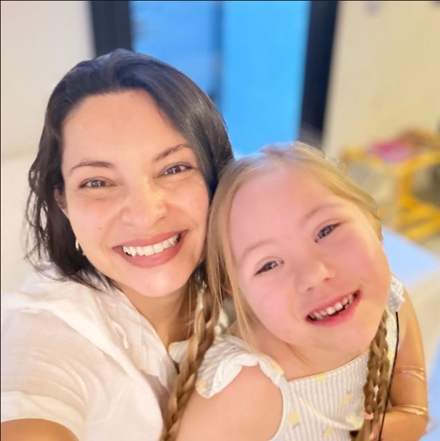

Análise Básica
Parâmetros essenciais para verificação inicial de qualidade da água.
Atuamos com ART, análises e consultoria especializada em água potável, piscinas e efluentes.
+15
anos de experiência técnica
CRQ ativo
responsabilidade profissional
Laudos e ART
evidências para decisão
Nossos Serviços
A atuação combina análise, documentação e acompanhamento para reduzir risco operacional sem criar ruído no dia a dia da equipe.
Triagem técnica
Envie a demanda para avaliarmos documentação, urgência, parâmetros e melhor caminho técnico.
Atendimento pessoa física
Escolha o tipo de análise e envie sua solicitação diretamente pelo WhatsApp.
Parâmetros essenciais para verificação inicial de qualidade da água.
Avaliação ampliada para consumo, rotina residencial e decisão técnica.
Análise e orientação para controle químico e manutenção preventiva.

Sobre a profissional
A Água Doce ART & Soluções Hídricas é conduzida por profissional com mais de 15 anos de experiência em análises, responsabilidade técnica e conformidade ambiental.
Com CRQ ativo e atuação focada em segurança operacional, a consultoria apoia empresas, condomínios e operações que precisam de orientação técnica confiável, documentação consistente e decisões sustentáveis.
Falar com a EspecialistaBlog
Conformidade
Efluentes
Água potável